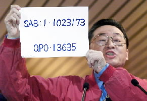

|

|
| 新黨總統候選人李敖在電視政見發表會上公布總統李登輝瑞士銀行帳號，並表示未來將適時公布更多的資料。 （記者王菁菁 攝影）
|
記者王吟芳 報導
新黨總統候選人李敖昨天在第一場總統大選電視政見會上公布2個外國銀行帳號，表示他掌握李總統A錢的證據，並說要在選後提出告訴「把李登輝關起來」。對此台北地檢署表示，依照憲法規定，國家元首有刑事豁免權，除非經過罷免或解職，在任時均不受刑事追究。
依據憲法第52條規定，「總統除犯內亂或外患罪外，非經罷免或解職，不受刑事上之訴究」。台北地檢署襄閱主任檢察官周志榮表示，現任元首不受刑事上的追訴，是受到憲法保障的刑事豁免權，同時檢方目前也沒有收到相關的檢舉案件。不過，總統卸任之後就沒有刑事豁免權的問題，。
新黨總統候選人李敖昨天在電視政見發表會上批評，李登輝雖然口口聲聲說「台灣的主張」，但是卻對台灣沒有信心。不但把孫女送到海外唸書，而且還有2個國外秘密帳戶，一個是瑞士某銀行，一個是瑞士鄰國列支敦斯登。李敖強調，他專門用証據來打擊這些說謊的人。
對於李敖提出李總統有A錢的疑似事證，並提出具體的銀行帳戶，台北地檢署上午表示，基於憲法第52條規定，總統具有內亂與外患罪之外的刑事豁免權，因此檢方不會主動偵辦所謂的李總統A錢說，至於選後李登輝卸任，檢方是否主動追查？台北地檢署則表示「到選後再說」。(2000/02/21/勁報)